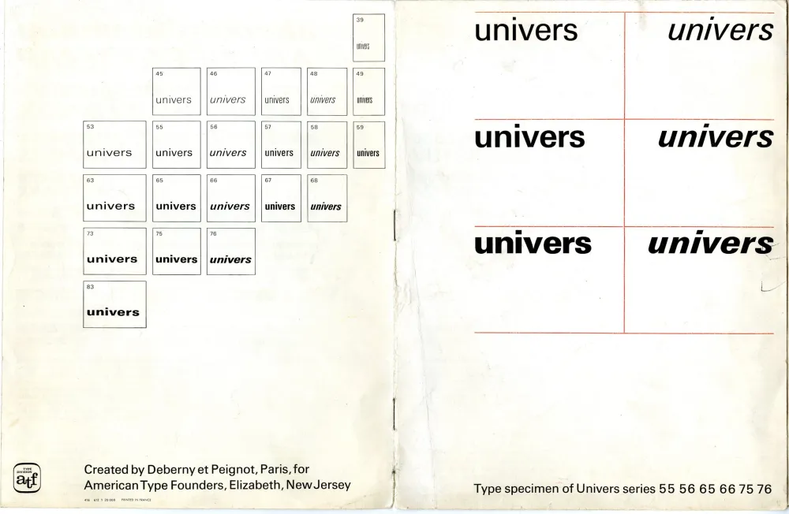

Univers
The OG Helvetica. Univers was one of the first typeface families to fulfil the idea that a typeface should form a family of consistent, related designs.

Tags:
Sans-Serif
The OG Helvetica. Univers was one of the first typeface families to fulfil the idea that a typeface should form a family of consistent, related designs.
